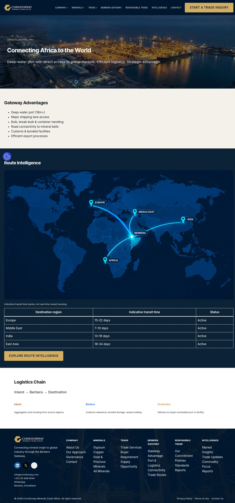

OBSERVED BEFORE — original screenshot 1348×2880px. Highlight marks the review region, not a measured DOM box. This is not an after-fix image.
Document depth and service/date basis; no unsupported active route or transit promise.

Ready solution
Document depth and service/date basis; no unsupported active route or transit promise.
Use the matching action prompts and proposed component prototype. Actual closure requires same-viewport after evidence and the issue acceptance tests.
View proposed component solution